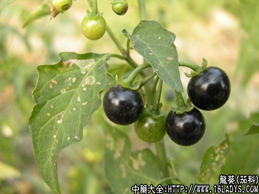

【中药概述】
龙葵为茄科草本植物龙葵的全草。苦、微甘，寒；有小毒。归心、肾经。
1．清热解毒：用于热毒所致的咽喉肿痛，如急性咽炎、急性扁桃体炎，配板蓝根，山豆根，连翘，赤芍，丹皮等药；疔疮肿痛，红肿热痛，如疖、痈、蜂窝组织炎及乳痈，毒蛇咬伤，配紫花地丁，蒲公英，野菊花，赤芍，丹皮，甘草等药。
2．活血消肿：用于癌肿，如肝癌、胃癌、食道癌，配白花蛇舌草，半枝莲，山豆根等药。
3．利水：用于尿路感染，小便不利，尿赤、尿道灼痛等，配鱼腥草，连翘，扁蓄，瞿麦，木通，冬葵子等药。
【药效鉴别】
龙葵与山慈菇的清热解毒散结之功相近，均可治疗疔疮痈肿及癌肿，但龙葵散结消肿之功较山慈菇为弱，治癌肿合用可增强作用。
【临证应用】
1.治肺癌，属血瘀水阻型，颜面、胸上部浮肿，气短喘促。用本品50g（鲜）20g（干），水煎服，日1剂；
2.外敷对皮炎、湿疹有止痒作用。
【药理作用】
对金黄色葡萄球菌、痢疾杆菌、伤寒杆菌、变形杆菌、大肠杆菌、绿脓杆菌均有一定的抑制作用。
【化学成分】
含皂甙、龙葵碱、甾类生物碱。有祛痰、镇咳作用。
【用量用法】
本品9——18g，水煎服；外用适量。
【附】
龙葵子（黑天天）（为茄科草本植物龙葵的子）。甘，温。归肺、肝、肾经。润肺止咳，温补肝肾，腰膝酸软。本品9～18g，水煎服；外用适量。
了解更多关于龙葵请往下看↓↓↓↓